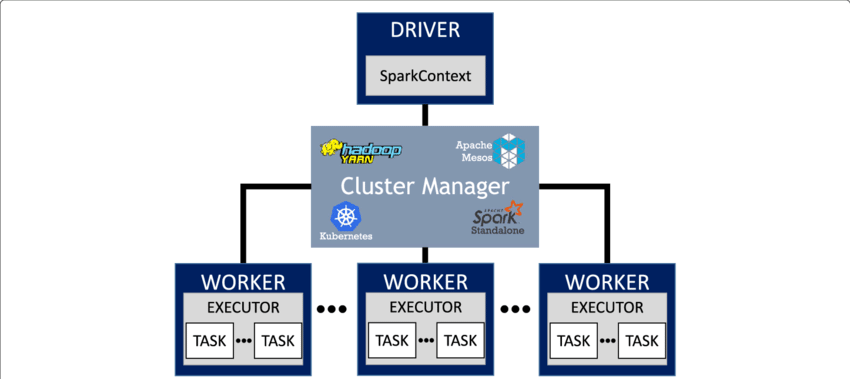

Spark and Sedona at CASD
Datascience team
Goals
- What is apache spark?
- Data processing with spark.
- What is apache sedona?
- Spatial data processing with sedona.
Why use Apache Spark?
Apache Spark is a distributed computing framework designed for processing and analyzing large-scale data efficiently. Spark is an open-source project under the Apache Software Foundation.
Apache Spark is designed to replace the older distributed computing framework Hadoop. By default, spark performs data computation in memory ont on disk.
Spark is now one of the most widely used big data processing engines.Spark Key Advantages:
- Speed: 100 times faster than Hadoop MapReduce
- Versatility: Batch data processing, Machine learning, Graph analytics
- Scalability: Single machine, on-premise clusters, public cloud
- Interoperability: Python, Java, Scala, R and SQL
- Vast and mature ecosystem
Some disadvantages
- Requires significant hardware resources: CPU, RAM and network(for cluster mode).
- Requires complex configuration: vast expertise to set up spark cluster correctly.
- Deep learning curve: RDDs, DataFrames, DAG scheduling, partitioning.
- Overhead for Small Jobs: Spark session setup and task scheduling introduce overhead.
Key Concepts in spark Application
Spark Application contains a driver program and data processing tasks on a cluster.
Kep concepts in spark(1):
- Driver: Coordinates with the cluster manager and worker, translate tasks into the execution plan, sends tasks to executors.
- Spark Session & Contexts: Entry point of spark application, provides access to DataFrames, SQL queries, and configurations.
- Cluster manager: Allocates CPU and RAM, determines which task runs where and when, monitors tasks and replaces failed ones.
- Executor: Run tasks and store data partitions in memory/disk.
Kep concepts in spark(2):
- RDD (Resilient Distributed Dataset): Core data model in spark. A distributed fault tolerance collection of immutable objects.
- DataFrame: An overlay of RDD, provides sql like operations and optimization(Catalyst, Tungsten)
- Dataset: Type-safe version of DataFrame, only available for Scala/Java API.
- Partitioning: Data(RDD, DataFrame, Dataset) is split into partitions distributed across executors. API.
Kep concepts in spark(3):
- Driver program: Directed acyclic graph (DAG) of transformations and actions.
- Transformations: map, filter, groupBy, etc.
- Actions: trigger the execution of the transformations before.
- Lazy Evaluation: Transformations are not executed immediately. Execution happens only when an action is called. Allows Spark to optimize the DAG as much as possible.
Kep concepts in spark(advance):
Data shuffling is the redistribution of data across executors. It's one of the most expensive operations, minimizing shuffle is the key for performance.
Spark in CASD
- Spark cluster mode: local, and yarn with hdfs
- Spark client API: Python, Java, Scala, R, SQL
- Integrated Development Environment (IDE): vs-code, r-studio, jupyter notebook
- Project Structure & Configuration Files: CASD best practices
Install spark in CASD
Apache Sedona
Apache Sedona is a cluster computing system for processing large-scale spatial data. Sedona extends existing cluster computing systems, such as Apache Spark, Apache Flink, and Snowflake, with a set of out-of-the-box distributed Spatial Datasets and Spatial SQL that efficiently load, process, and analyze large-scale spatial data across machines.
CASD provides Apache Spark cluster for Sedona.